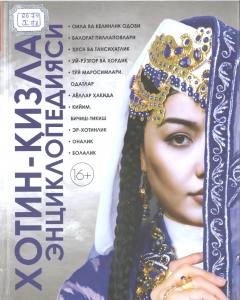

XEOila, ayollar tarbiyasi va turmush madaniyatiga bag'ishlangan qomusiy qo'llanma.
Ushbu ensiklopediya qiz bolaning dunyoga kelishidan boshlab tarbiyasi, oila qurishga tayyorgarlik, er-xotinlik munosabatlari, onalik baxti va milliy an'analarga bag'ishlangan. Kitobda bekamu-kust oila va turmush madaniyatini shakllantirish bo'yicha amaliy maslahatlar berilgan.